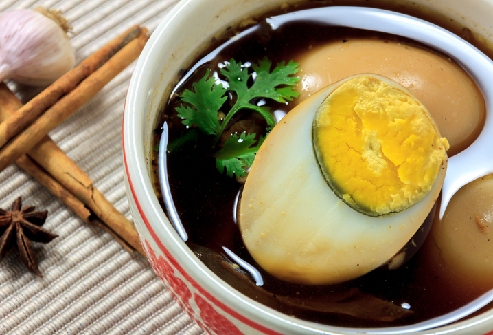
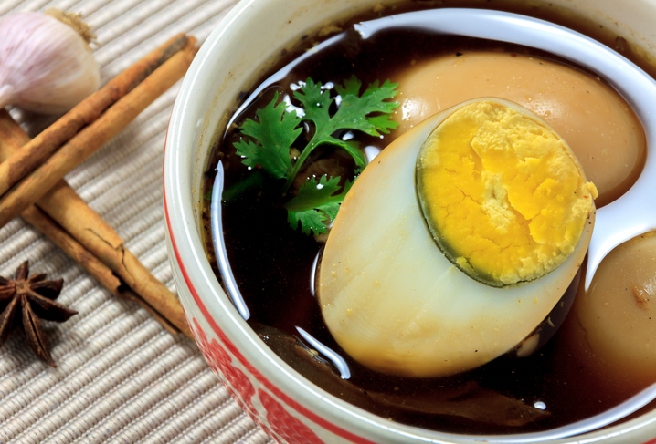

แจกสูตรไข่พะโล้โบราณ
 >
>
ส่วนผสม
- ไข่ไก่ 6 ฟอง
- รากผักชี 4 ราก
- กระเทียม 5 กลีบ
- พริกไทย ½ ช้อนชา
- หมูสามชั้น 200 กรัม
- น้ำตาลปี๊บ ½ ถ้วย
- ซีอิ๊วขาว 1 ช้อนโต๊ะ
- โป๊ยกั๊ก 4 ดอก
- อบเชย 1-2 ชิ้น
- น้ำมันพืช สำหรับผัด 1 ช้อนโต๊ะ
- น้ำเปล่า 3 ถ้วย
วิธีทำ
- ตั้งน้ำใส่เกลือนิดหน่อย ต้มไข่ด้วยไฟกลางประมาณ 10 นาที แล้วยกลงจากเตา เอาไข่ออกมาแช่น้ำให้เย็นแล้วปอกเปลือกแล้วพักไว้
- นำสามเกลอ (รากผักชี กระเทียม และพริกไทย) โขลกให้ละเอียด
- เมื่อโขลก 3 เกลอละเอียดแล้ว ตั้งกระทะใช้ไฟปานกลาง ใส่น้ำมันลงไปนำสามเกลอลงไปผัดให้หอม
- เมื่อสามเกลอเริ่มหอมแล้วให้ใส่น้ำตาลปี๊บลงไปผัด และเคี่ยวจนน้ำตาลสีเข้มจัด เมื่อได้สีน้ำตาลเข้มจัดอย่างที่ต้องการใส่หมูสามชั้นลงไปผัดแค่พอสุก
- ใส่ไข่ต้มและน้ำเปล่า ลงไปตามด้วยโป๊ยกั๊กและอบเชย
- ปรุงรสด้วยเกลือเล็กน้อย พอน้ำซุปเดือดแล้วให้เบาไฟลงโดยใช้ไฟอ่อน
- ค่อยๆ เคี่ยวต่อไปประมาณ 1 ชั่วโมง น้ำซุปจึงจะเริ่มเข้าเนื้อ พร้อมเสิร์ฟ
เคล็ดลับ
- ตำสามเกลอให้ละเอียด เพราะถ้าไม่ละเอียดเวลาต้มจะลอยขึ้นหน้าซุป
- ผัดสามเกลอให้เหลืองหอมกำลังพอดี อย่าผัดไหม้เกินไปเพราะจะทำให้จะพะโล้มีรสชาติขม
- เคี่ยวน้ำตาลให้ได้สีเข้มที่สุด แต่ถ้าเคี่ยวมากเกินไปน้ำตาลจะไหม้และขมได้ การเคี่ยวน้ำตาล จะได้น้ำพะโล้ที่รสชาติเข้มข้นและอร่อยยิ่งขึ้น
- ถ้าไม่ทานเนื้อหมูสามารถใส่เนื้อสัตว์อื่นแทนได้ แนะนำว่าให้ใส่เนื้อส่วนที่ติดมันเวลาตุ่นจะทำให้น้ำซุปยิ่งอร่อยขึ้น และเนื้อสัตว์ไม่กระด้าง หรือถ้าไม่ทานเนื้อสัตว์ ก็สามารถใส่เต้าหู้แทนได้
 
